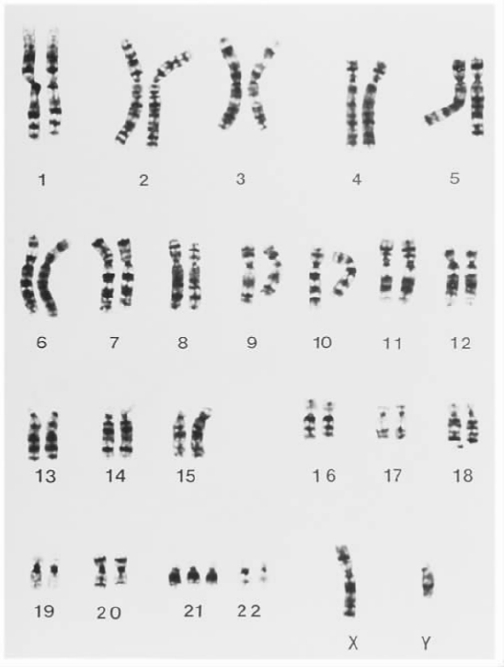
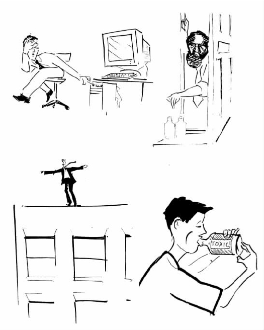
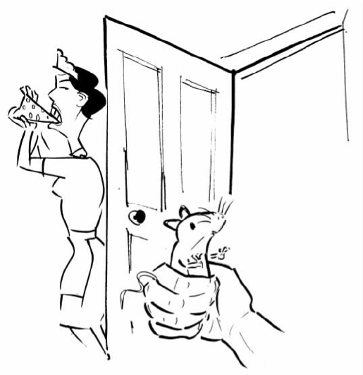

科学家们经常告诉我们一些关于世界的事实，这些事实如果不是出自他们之口，我们不会相信。例如，生物学家告诉我们，我们和大猩猩有密切的亲缘关系，地理学家告诉我们非洲和南美洲过去连接在一起，宇宙学家告诉我们宇宙一直在膨胀。但是，科学家们是如何获得这些听起来匪夷所思的结论的呢？毕竟，没有人曾经看到过一个物种进化成另一个物种，一块大陆分裂成两半，或者看到过宇宙变得越来越大。答案当然是，科学家们是通过推理或推论的过程确信上述事实的。对这种过程更多地了解对我们将会大有裨益。科学推理的确切本质是什么？对于科学家们所作的推论我们应该持有多大的信任度？这些就是本章所要讨论的话题。
演绎和归纳
逻辑学家在演绎和归纳这两种推理形式之间作了重要的区分。下面是一个演绎推理或者演绎推论的例子：
所有的法国人都喜欢红葡萄酒
皮埃尔是一个法国人
——————
因此，皮埃尔喜欢红葡萄酒
前两项陈述称为推论的前提，而第三项陈述称为结论。这是一个演绎推理，因为它具有以下特征：如果前提为真，那么结论一定也为真。换句话说，如果所有的法国人都喜欢红葡萄酒为真，并且皮埃尔是法国人也为真，那么就会得出皮埃尔确实喜欢红葡萄酒。这种推理通常可以表达为，推理的前提必然导致结论。当然，这种推论的前提在现实情形中几乎当然非真——肯定存在不喜欢红葡萄酒的法国人。然而这并不是重点。使这个推论成立的是存在于前提和结论之间的一种恰当关系，即前提为真则结论也必然为真。前提实际上是否为真则是另外一回事，它并不影响推论的演绎性质。
并非所有的推论都是演绎的。请看下面的例子：
盒子里前五个鸡蛋发臭了
所有鸡蛋上标明的保质日期都相同
——————
因此，第六个鸡蛋也将是发臭的
这看起来似乎是一个非常合理的推理。但它却不是演绎性的，因为前提并不必然导致结论。即使前五个鸡蛋确实发臭了，并且即使所有鸡蛋上标明的保质日期相同，也不能保证第六个鸡蛋一样发臭。第六个鸡蛋完好无损的情况是很有可能的。换言之，这个推论的前提为真而结论为假，这在逻辑上是可能的，所以这个推论不是演绎的。它被称为归纳推论。在归纳推论或者说归纳推理中，我们是从关于某对象已被检验的前提推论到关于该对象的未被检验的结论——本例中这个对象是鸡蛋。
演绎推理是一种比归纳推理更可靠的推理方式。进行演绎推理时，我们可以保证从真前提出发就会得出一个真结论。然而，这种情况却不适用于归纳推理。归纳推理很有可能使我们从真前提推出一个假结论。尽管存在这种缺点，我们却似乎一直都在依赖归纳推理，甚至很少对它进行思考。例如，当你早上打开电脑的时候，你相信它不会在你面前爆炸。为什么呢？因为你每天早上都会打开电脑，它至今从来没有在你面前爆炸过。但是，从“迄今为止，我的电脑在打开时都不曾爆炸过”到“我的电脑在此时打开时将不会爆炸”的推论是归纳的，而不是演绎的。这个推论的前提并不必然得出结论。你的电脑此时爆炸在逻辑上是可能的，即使这在以前从来没有发生过。
在日常生活中，其他归纳推理的例子随处可见。当你逆时针转动方向盘的时候，你认为汽车将会向左而不是向右拐。驾车上路时，你就把生命作为赌注压在这一假定上。是什么使你如此肯定它是正确的？如果有人要求你证明这一确信，你将如何回答？除非你是一个机修工，你有可能会回答：“在过去每一次我逆时针转动方向盘的时候，汽车都是向左拐的。因此，当我这一次逆时针转动方向盘时也会发生同样的情况。”这同样是归纳推论，而不是演绎推论。归纳性推理似乎是我们日常生活中不可或缺的一部分。
科学家们也运用归纳推理吗？答案似乎是肯定的。来看一种被称为唐氏综合征的遗传学疾病。遗传学家告诉我们唐氏综合征患者具有一条多余的染色体——他们拥有47条而不是常人的46条（参见图5）。他们是如何发现的呢？答案当然是，他们测试了大量的唐氏综合征患者并且发现每一位患者都有一条多余的染色体。于是他们便归纳地推出这一结论，即所有的唐氏综合征患者，包括尚未进行检验的，都有一条多余的染色体。很容易看出这个推论是归纳的。研究样本中的唐氏综合征患者有47条染色体的事实，并不能证明所有的唐氏综合征患者都是如此。尽管不太可能出现这样的情况，但是一个非典型样本的存在也是有可能的。
这种例子绝不仅仅只有一个。事实上，无论何时从有限的资料数据获得一个更普遍的结论，科学家们都要运用归纳推理，这是他们一直使用的方法。以牛顿的万有引力原理为例，如上一章所述，该定律讲的是宇宙中的每一个物体都会对任一其他物体产生引力作用。很显然，牛顿并没有通过检验宇宙中的每一物体来得出这一定律——他不可能这样做。其实，他首先发现行星和太阳以及地球表面附近各种运动的物体适用这个定律。从这些数据中，他推论出定律对于所有的物体都适用。这一推论显然也是归纳性的：牛顿定律适用于某些物体的事实并不能保证它适用于所有物体。
归纳在科学中的核心作用有时候是被我们的说话方式弄得含糊不清了。例如，你也许看到报上说科学家已经“通过实验证明”基因改良的玉米对人体是安全的。这里的意思是科学家已经对于大量的人测试了这一种玉米，没有一个人产生任何不良反应。但是，严格地说这并没有证明 这种玉米是安全的，即没有像数学家证明毕达哥拉斯定理那样。因为，从“这种玉米对于被检验过的人没有任何坏处”到“这种玉米对于任何人都没有坏处”的推论是归纳的，而不是演绎的。这份报纸本来应该如实地说，科学家已经发现了特别有力的证据 表明这种玉米对人是安全的。“证明”一词应该仅仅严格地用于演绎推论的场合。在这个词的严格意义上，即使曾经有过，科学假说也极少能够通过数据被证明是真的。

图5 唐氏综合征患者整套染色体（或者说染色体组型）示意图。不像多数正常人的21号染色体具有两条复制体，唐氏综合征患者的21号染色体有3条复制体，因此他们总共有47条染色体。
大多数哲学家认为科学过分依赖归纳推理的事实是显然的，由于过于明显，以至于几乎不需要再有辩论。但是，引人注意的是，这一点遭到了我们在上一章提到过的哲学家卡尔·波普尔的否定。波普尔认为科学家需要的仅仅是演绎推论。如果事实真是如此就好了，正如我们已经了解的那样，演绎推理比起归纳推理要可靠得多。
波普尔的基本观点是这样的：尽管不可能证明某科学理论确实来源于一个有限的数据样本，却有可能证明某理论是错误的。假设一个科学家一直在思考关于所有金属片都导电的理论。即使她测试的每一片金属确实都导电，这也不能证明该理论是正确的，其原因我们上文已经说清楚了。但是哪怕她仅仅找到一片金属不导电，就可以证明这个理论是错误的。因为，从“这片金属不导电”到“所有的金属片都导电是错误的”的推论是演绎的——前提必然导致结论。因此，如果一个科学家仅仅热衷于解释一个特定理论是错误的，她有可能不使用归纳推论就可以做到。
波普尔观点的缺陷显而易见，原因在于科学家并不仅仅热衷于解释特定理论是错误的。当一个科学家收集实验数据的时候，她的目的也许是为了表明一个特定理论——也许是与她针锋相对的理论——是错误的。但更有可能的是，她正致力于说服人们相信她自己的理论是正确的。为了达到此目的，她将不得不求助于归纳推理。所以，波普尔想表明科学可以不需要归纳是不会成功的。
休谟的问题
虽然归纳推理在逻辑上并非无懈可击，但它似乎是形成关于世界之信念的一种非常合理的方法。迄今为止太阳每天都升起的事实也许不能证明明天它会升起，但是这一事实是否的确给了我们很好的理由相信太阳明天会升起？如果你遇到某个人声称完全拿不准明天太阳是否会照常升起，你即使不说他神智不清，也一定会把他视为非常古怪的人。
然而，是什么证明了我们对于归纳的信任是正确的？我们该怎样说服拒绝归纳推理的人他们是错误的？18世纪苏格兰哲学家大卫·休谟（1711—1776）对这一问题给出了一个简单而又激进的答案。他认为，运用归纳的正当性不可能完全从理性上被证明。休谟承认，我们在日常生活和科学活动中时刻都在运用归纳方法，但是他主张这仅仅是一种与理性无关的动物性习惯。他认为，若要为归纳的运用提供充分的理由，我们不可能办得到。
休谟如何推出这一令人惊讶的结论？他首先提出，无论我们何时进行归纳推论，似乎都要预设他所称的“自然的齐一性”。为了弄清休谟在这里的意思究竟是什么，我们再回顾一下上一节关于归纳推理的一些内容。我们考察了从“我的电脑至今没有爆炸过”到“我的电脑今天也不会爆炸”；从“所有被检验的唐氏综合征患者都有一条多余的染色体”到“所有唐氏综合征患者都有一条多余的染色体”；从“至今观察的所有物体都遵守牛顿的引力定律”到“所有的物体都遵守牛顿的引力定律”等等这些推论。对于这些案例中的每一情形，我们的推理似乎都依赖于一个假设，即我们未检验过的物体将在某些相关的方面与我们已经检验过的同类物体相似。这一假设正是休谟对于自然的齐一性的解释。
但是正如休谟所问，我们如何获知自然的齐一性假设实际上是正确的呢？我们能否在某种程度上证明（严格意义上的证明）它的正确性呢？不，休谟说，我们不可能做到。因为我们很容易想到，宇宙并不是齐一的，并且宇宙每天都在任意地改变。在这样一个宇宙中，电脑有时也许会无缘无故地发生爆炸，水有时也许会在毫无征兆的情况下使我们中毒，台球在碰撞中也许会停止运动，等等。既然这样一个“非齐一”的宇宙是可能存在的，我们就不可能严格证明自然的齐一性的正确性。原因在于，如果我们可以证明其正确性，这个非齐一的宇宙在逻辑上就不可能存在了。
自然的齐一性虽不可证明，我们却有可能寄望于找到证明其正确性的经验证据。毕竟，迄今为止自然的齐一性一直保持其正确性，这是否就的确给了我们很好的理由相信它是真的？休谟认为，这种观点回避了我们的问题！因为它本身就是一个归纳推理，所以它本身就要依赖自然的齐一性的假设。一个从一开始就假定自然的齐一性的观点，显然不可能被用来证明自然的齐一性是正确的。换一种方式来说：一个确定的事实是至今为止自然在大体上是齐一的，但是我们不能引用这一事实去论证自然将持续齐一，因为它假定过去已经发生的情况能可靠地标示未来将会发生的情况——这正是 自然的齐一性假设。如果我们试图依靠经验来论证自然的齐一性，我们就会陷入循环推理。
休谟观点的力量可以通过下述情况来理解，即设想你如何去说服本该相信而不相信归纳推理的人。你也许会说：“看，归纳推理至今都在发挥着很好的作用。通过运用归纳方法科学家已经分裂了原子、使人类登上月球、发明了计算机，等等。反之，那些不曾运用过归纳方法的人已经走向痛苦的死亡。他们吞下砒霜，认为它们能滋养身体，从高楼上跳下，认为可以凌空飞翔，等等（参见图6）。因此，运用归纳推理显然会让你受益匪浅。”但是，这当然无法说服怀疑者。因为，声称归纳值得信赖是因为它迄今为止都发挥着很好的作用，这本身就是以一种归纳的方式在进行推理。对于尚不信任归纳方法的人来说，这种观点是没有说服力的。此即休谟的基本观点。
这就是问题所在。休谟指出，我们的归纳推论建立在自然的齐一性假设之上。但是我们无法证明自然齐一性是正确的，并且我们只有回避这一问题才能为它的正确性提供经验性证据。所以，我们的归纳推论依据的是一种关于世界的假设，对于该假设我们没有很好的根据。休谟断定，我们对于归纳的信心只是盲目的确信——无论如何它无法在理性上得到辩护。
这种引人兴趣的观点已经在科学哲学领域产生了巨大的影响，并且这种影响力今天仍在持续。（波普尔的一个失败的论证，即科学家仅仅需要运用演绎推论方法，就源于他相信休谟已经表明归纳推理完全是非理性的。）休谟观点的影响并不难理解。在通常情况下，我们认为科学正是理性探究的范式。对科学家们所说的关于世界的一切，我们深信不疑。每一次坐飞机旅行，我们都把自己的生命放在设计飞机的科学家的手上。但是科学却依赖着归纳，休谟的观点似乎表明归纳不可能被理性地辩护。如果休谟正确，建立科学的基础看起来就不如我们所希望的那样坚固。这种使人困惑的情形被称为休谟归纳问题。

图6 对于那些不相信归纳方法的人所发生的情况。
哲学家们已经用了差不多数十种方法来回应休谟的问题；在今天，这一问题仍然是研究的热点领域。有些人认为，问题的关键在概率这个概念上。这种提法似乎非常合理。因为人们很自然地就可以想到，尽管一项归纳推论的前提不保证结论正确，但它们确实使结论非常有可能成立。同样，即使科学知识并不是确定的，但它为真的概率仍然很大。但是，对于休谟问题的这种回应又产生了它自身的难题，并且这种回应绝不会被广泛接受；我们将在适当的时候再讨论这一点。
另一个常见的回应是：承认归纳不可能在理性上得到辩护，但是主张这一点事实上并不成问题。人们是如何为这种主张作辩护的呢？一些哲学家已经指出，归纳对于我们思考和推理是如此重要，以至于它并不是那种正当性可以被证明的东西。彼得·斯特劳森，当代一位颇有影响的哲学家，为辩护这种观点作出了以下类比：如果有人担心一个特定的行为是否合法，他们可以查阅法律书籍并把这一行为同法律书上所写的内容作比较。但是若有人担心法律本身是否合法，这的确就是一种很奇怪的担心了。因为法律是判断其他事情的合法性的标准，探究这种标准本身是否合法几乎是没有意义的。斯特劳森认为，同样的情况也适用于归纳。归纳是一种我们用来决定关于世界的断言是否正确的标准。例如，我们运用归纳来判断一个制药公司关于它的新药物利润惊人的看法是否正确。因此，问归纳本身是否正当是无意义的。
斯特劳森真的成功解决了休谟问题吗？一些哲学家认为是的，另一些哲学家认为不是。但是大多数人都同意，为归纳作出一个令人满意的辩护非常困难。（弗兰克·拉姆齐，一位来自20世纪20年代剑桥大学的哲学家，认为试图为归纳寻求辩护就等于试图“水中捞月”。）这个问题是否应该使我们担心或者动摇我们对科学的信念，是一个你自己应该深思熟虑的难题。
最佳说明的推理
我们至今为止考察过的归纳推论事实上都拥有同样的结构。在每一个例子中，推论的前提都具有这样的形式：“迄今为止所有验证过的x都是y”，结论具有的形式是“下一个将要验证的x也会是y”，或者有时说“所有的x都是y”。换言之，这些推论使我们从某种条件下经过验证的情形推出某种条件下未加验证的情形。
正如我们所看到的，这样的推论被广泛应用在日常生活和科学活动中。然而，还存在不符合这种简单模型的另外一种普通非演绎性推论。请看下面的例子：
食品柜里的干酪不见了，仅留下一些干酪碎屑
昨天晚上听到了来自食品柜的刮擦声音
——————
所以，干酪是被老鼠吃了
显然这一推理是非演绎性的：前提并不必然导致结论。干酪有可能是被女仆偷了，她巧妙地留下一些碎屑以使这看起来像是老鼠的杰作（参见图7）。刮擦声响可以由许多方式造成——也许是由于水壶加热过头。尽管如此，这个推论却显然是一个合理的推论。假设老鼠吃掉了干酪似乎比其他各种解释都更为合理。毕竟，女仆通常是不会偷干酪的，现代的水壶一般也不会加热过头。而老鼠通常却一有机会就会偷吃干酪，并且的确会制造些刮擦的声响。因此，虽然我们不能确定猜想老鼠作案是对的，但总体来讲这个假说看起来相当合理：它是对已知事实最好的解释方式。

图7 老鼠假说与女仆假说二者都可以作为失踪干酪的解释。
因为很显然的原因，这种类型的推理被称为“最佳说明的推理”（inference to the best explanation），或者缩略为IBE。围绕着IBE和归纳推论之间的关系产生了某些术语混乱。有些哲学家把IBE归为归纳推论的一种；实际上，他们使用“归纳推论”一词指的是“任何一种非演绎的推论”。另外一些哲学家把IBE和归纳推论对立看待，正如我们在前文所做的。按照这种划分方式，“归纳推论”专指从某种既定的已检验的情形推出某种未检验的情形，即我们在之前考察过的那类情形；IBE和归纳推论因此是两种不同类型的非演绎推论。只要我们坚持这一点，在选择术语时就不会有什么为难之处。
科学家们频繁地使用IBE。例如，达尔文通过唤起对生物世界各种现象的关注来论证他的进化论理论，认为如果假设现存的物种都是孤立地被创造出来，生物世界的现象就很难得到解释，但是如果像他理论中所说的，现存物种是从共同的祖先演化而来，就很容易说得通。例如，马和斑马的腿二者在解剖学上具有紧密的相似性。如果上帝分别创造了马和斑马，我们如何解释上述情况呢？可以想见，只要愿意，上帝本可以把它们的腿做得大为不同。但是，如果马和斑马二者是由上一级共同祖先演化而来的，这就为它们的解剖学相似性提供了一种显明的解释。达尔文认为，他的理论对于这种现象以及其他许多种现象的解释力，为其正确性提供了强而有力的证据。
另一个IBE的例子是爱因斯坦对于布朗运动的杰出贡献。布朗运动指的是悬浮在液体或气体中的微小粒子所作的无规则、曲折的运动。它是由苏格兰植物学家罗伯特·布朗（1713—1858 [1] ）在1827年观察水中漂浮的花粉粒时发现的。19世纪出现了许多种试图解释布朗运动的理论。一种理论把运动归因于粒子间的电荷吸引力，另一种理论将其归于来自外在环境的扰动作用，还有一种理论则归因于液体内的对流作用。正确的解释建立在物质动力学说之上，该理论认为液体和气体都是由运动着的原子和分子组成的。悬浮的微粒与周围的分子发生碰撞，导致了由布朗第一个观察到的无规律的、任意的运动。这一理论是在19世纪后期首先被提出的，但并没有得到广泛接受，在一定程度上是因为许多科学家并不相信原子和分子是真实的物理实体。但是在1905年，爱因斯坦对于布朗运动进行了独创性的数学分析，作出了许多精确的、定量的预测，这些预测都被后来的实验所证实。在爱因斯坦的研究之后，分子运动论很快被认为是对布朗运动提供了一种远远优于其他理论的解释，对于原子和分子是否存在的质疑很快就平息了。
一个有趣的问题是，IBE和普通的归纳哪一种是更基本的推论模式。哲学家吉尔伯特·哈曼认为IBE更基本。按照这种观点，无论何时作出诸如“至今所有已检验的金属片都导电，所以所有的金属片都导电”这样的普通归纳推论，我们暗中都在诉诸解释性的观点。我们假设的是，对于样本中的金属片为何导电的正确解释，无论它是什么，都必然推出所有的金属片导电；这就是我们进行归纳推理的原因。但是如果我们相信，样本中的金属片之所以导电是因为（例如）一个实验人员对其进行了处理，我们就不会推出所有的金属片都导电。这一观点的支持者并不是认为IBE和一般的归纳之间没有任何差别——差别显然是有的，而是认为普通的归纳最终要依赖于IBE。
其他的哲学家则认为这正好颠倒了事实：他们认为，IBE本身依附在普通的归纳之上。为了找到支持这种观点的理由，让我们回顾一下上文的食品库干酪的例子。我们为什么认为老鼠假说是一种比女仆假说更好的解释呢？大概是因为，我们知道女仆通常是不偷吃干酪的，而老鼠却不然。但是，这是我们从普通的归纳推理中得到的知识，建立在我们对于老鼠和女仆先前行为观察的基础之上。所以按照这种观点，若想决定在一组竞争性的假说中哪一个是对事件的最佳解释，我们总是诉诸从普通的归纳中获得的知识。因此，认为IBE是一种更基本推论模式的观点是不正确的。
无论偏向于上述对立观点中的哪一种，有一点显然要引起更多的关注。若想使用IBE，我们需要某种方法来确定竞争性假说中哪一个提供了对事实的最佳解释。通过什么标准来确定这一点呢？一种常见的答案是，最佳解释指的是最简单或者原因最少的解释。再回顾一下食品柜干酪的例子。其中有两个事实需要解释：丢失的干酪和刮擦的声响。老鼠假说仅仅假定了一个原因——老鼠——来解释两个事实。女仆假说必须假定两个因素——一个不诚实的女仆和一个过度加热的水壶——作为条件来解释同样的事实。所以老鼠假说假设的原因更少，因此更好。在达尔文的例子中也是如此。达尔文的理论能够解释关于生物世界非常广泛的事实，并不止是物种之间解剖学上的相似性。正如达尔文了解的那样，这些事实中的每一个都可以通过其他的方式得到解释。但是进化论能一揽子解释所有的事实——这就是使它成为最佳解释的原因。
简单性或简洁性是一个好的解释的标志——这一观点相当有吸引力，并且对于充实IBE观点确有帮助。但如果科学家运用简单性作为进行推论的指导，就会产生一个问题。我们如何知道宇宙是简单而不是复杂的呢？偏爱以最少的原因来解释事实的理论看似的确有理。但是，对比不如它简单的理论，是否存在客观的理由支持它更有可能正确呢？科学哲学家在这个难题上并没有达成一致意见。
概率与归纳
概率的概念在哲学上令人困惑。部分的困惑在于，“概率”这个词似乎具有不止一种含义。如果听说英国妇女寿命达到100岁的概率是十个中有一个，你会把该信息理解为有十分之一的英国妇女寿命达到了100岁。同样，如果听说男性吸烟者患肺癌的概率是四个中有一个，你会认为这指的是有四分之一的男性吸烟者患肺癌。这被称为概率的频率意义上的解释：它把概率等同于比例，或者说频率。但是，如果你看到在火星上发现生命的概率是千分之一，你会如何理解呢？这意味着太阳系中每一千个行星中就有一个含有生命吗？显然不是。首先，太阳系中仅仅存在九个行星。因此，概率在这里必定有另一种所指。
对于“火星上存在生命的概率是千分之一”的一种解释是，如此陈述的人只是在表达他们自己的主观想法——告诉我们对于火星上存在生命他们认为有多大的可能性。这是概率的主观意义上的解释。它把概率作为衡量我们个人信念强弱的一种尺度。显然，我们对自己所持的某些信念比其他的信念要更为坚定。我非常有信心巴西队会夺得世界杯，也相当相信耶稣基督的存在，但不怎么相信全球环境灾难可以被避免。这一点可以通过以下的陈述来表达：我对“巴西队会夺得世界杯”这一说法赋予很高的概率，对“耶稣基督的存在”赋予较高的概率，对“地球环境灾难可以被避免”赋予较低的概率。当然，要给这些陈述的信念强度标出精确的数值是很难的，但主观式解释的支持者认为这仅仅是实践上的不足。他们认为，在原则上，我们应该能够对每一种陈述赋予一个精确的用数字表示的概率，来反映我们相信或不相信这些陈述的强度有多大。
概率的主观解释暗示了不存在关于概率的客观的、独立于人之信念的事实。我说火星上存在生命的概率很高，而你说这个概率很低，我们之间没有谁对谁错——我们都仅仅是在表达我们对相关陈述有多强的信念。当然，关于火星上是否有生命，客观的事实是存在的；但是按照主观解释，在火星上有生命的可能性有多大这一点上则不会有客观的事实存在。
概率的逻辑学解释拒绝接受这种立场。它认为诸如“火星上有生命的概率很高”这一陈述存在客观上的对错之别，它与一组特定的证据相关。按照这种观点，一个陈述的概率即支持该陈述的证据强弱的尺度。逻辑学解释的支持者认为，在用语言所作的任何两个陈述中，我们在原则上可以得出其中一个陈述的概率，而把另一个陈述作为证据。例如，已知现在地球变暖的速度，我们想要得出在一万年之内出现冰川期的概率。主观式解释认为，关于这种概率的客观事实并不存在。但逻辑解释坚持认为存在：现在地球变暖的速度对于一万年内出现冰川期的陈述赋予了一个确定的可用数字表达的概率，比如说是0.9。0.9的概率显然很高——最大值是1，所以在给定地球变暖的证据下，“一万年内出现冰川期的概率很高”这一陈述在客观上就是正确的。
如果已经学习了概率论或统计学，你也许会对上述概率有不同解释的说法感到困惑。这些解释和你所学的如何相关？答案是：概率的数学研究本身并没有告诉我们概率的含义，这一含义正是我们在上文所一直探究的。事实上，大多数的统计学家会倾向于概率的频率式解释，但是，关于如何解释概率的问题，正如大多数哲学问题一样，不可能以数学的方式得到解决。不论采用哪一种解释，计算概率的数学公式都是一样的。
科学哲学家对概率感兴趣主要出于两个原因。一是在许多科学分支，特别是物理学和生物学中，定律和理论都是运用概率这个概念得出的。例如，以著名的孟德尔遗传学理论为例，它研究的是有性繁殖的种群中基因的代际传递问题。孟德尔遗传学最重要的原理之一是，有机体中的每一个基因使自身成为该有机体的配子（精子或卵子）的机会都是50%。因此，你母亲身上的任何基因将有50%的机会也存在于你的体内，你父亲身上的基因也同样如此。运用这一原理与其他的原理，遗传学家能够提供详细的解释，即为什么某些显著的特性（例如眼睛的颜色）以现有方式在家族的代际之中分配。在此，“机会”就是概率的另一种表达，孟德尔遗传学原理显然切实运用了概率的概念。还可以给出许多其他的例子，这些例子都是通过概率来表达科学定律和原理的。理解这些定律和原理的需要，是对概率进行哲学研究的一个重要动力。
科学哲学家对概率这个概念感兴趣的第二个原因，是希望可以借助它阐明归纳推论，特别是休谟问题；这一点就是我们在此所关注的。休谟问题的根源是这样一个事实：一个归纳推论的前提条件并不保证其结论为真。然而人们很容易声称，一个典型归纳推论的前提条件确实为结论赋予了很高的可能性。尽管至今为止所有被检验的物体都遵循牛顿万有引力原理这一事实，并不能证明所有的物体都是这样，但该事实肯定就使得所有物体都遵循牛顿万有引力原理很有可能吗？休谟问题真的很容易得到解答吗？
事情并非如此简单。我们必须追问，对休谟的回应采取的是哪一种概率解释方式。按照频率式解释，说极有可能所有物体都遵循牛顿定律，就是指所有的物体中有很大比例遵循这一定律。但是除非运用归纳法，我们无法知道这一点！我们仅仅验证了宇宙所有物体中很小的一部分。因此，休谟问题仍然存在。看待这一点的另一方式是这样的：我们先看从“所有已检验的物体都遵循牛顿定律”到“所有物体都遵循牛顿定律”这一推论。为了回应休谟的担心，即这一推论的前提不保证结论为真，我们设想即便如此它却使结论很可能成立。但是，从“所有已检验的物体都遵循牛顿定律”到“所有物体都遵循牛顿定律很可能成立”仍然是归纳推论，鉴于后者意指“所有物体中有很大比例遵循牛顿定律”，正如频率式解释的情形。所以，若采用概率的频率式解释，诉诸概率这个概念就并不能解决休谟的问题。因为这样的话，关于概率的知识本身就得依靠归纳。
概率的主观式解释对于休谟问题同样无能为力，尽管原因有所不同。假设约翰认为太阳明天将会升起而杰克认为它不会升起。两人都接受在过去太阳每天都升起的证据。在直觉上，我们会说约翰是理性的而杰克则不是，因为证据使约翰所相信的更为可能。但是如果概率仅是一个主观观念的问题，我们就不能这样说。我们所有能说的只是，约翰对于“太阳明天升起”赋予了一个很高的概率而杰克没有。如果不存在关于概率的客观事实，我们就不能说归纳推论的结论在客观上是可能的。所以我们就无法解释为什么像杰克那样拒绝使用归纳方法的人是不理性的。然而，休谟问题正需要这样的一个解释。
概率的逻辑学解释更有希望在休谟问题上作出令人满意的回应。鉴于太阳在过去的每一天都升起了，我们假设有一个关于太阳明天将会升起这一概率的客观事实。假设这一概率非常高。由此，我们就能解释为什么约翰是理性的而杰克不是。因为，约翰和杰克两人都接受了太阳过去天天升起的证据，但是杰克没有意识到这一证据使得太阳明天升起很可能成立，而约翰却意识到了这一点。正如逻辑学解释所建议的，把一个陈述的概率看做是支持它的证据的衡量尺度，这与我们的直观感觉——归纳推论的前提条件可以使结论很可能成立，即便不能保证其正确性——巧妙地吻合。
因此，那些试图通过概率概念来解决休谟问题的哲学家倾向于支持逻辑学解释就不足为奇了。（其中之一就是著名经济学家约翰·梅纳德·凯恩斯，他的早期兴趣在于逻辑学和哲学。）不幸的是，今天的大多数人认为概率的逻辑解释面临着非常严重的、可能无法克服的难题。这是因为，在任何细节上完成概率的逻辑学解释的尝试都碰到了一堆问题，既有数学上的也有哲学上的。结果是，今天许多哲学家倾向于彻底拒斥逻辑学解释的基本假设——在给出另一个客观事实的情况下，存在关于一个陈述之概率的客观事实。拒斥这种假设自然就导向了概率的主观解释，然而正如我们已经了解的，主观解释在休谟问题上提供令人满意的回应希望渺茫。
即使休谟问题如看起来那样无望最终解决，关于这一问题的思考仍然有其价值。对于归纳问题的思考引导我们进入了一个有趣的问题之域，这些问题关乎科学推理的结构、理性的本质、人类依赖科学的适当限度、概率的解释，等等。与大多数哲学问题一样，这些问题可能没有终极答案，但是在探究它们的同时我们也对科学知识的本质和界限了解了很多。